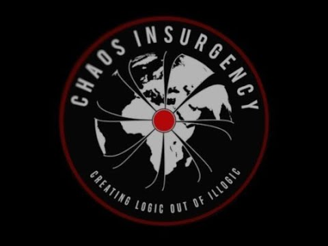
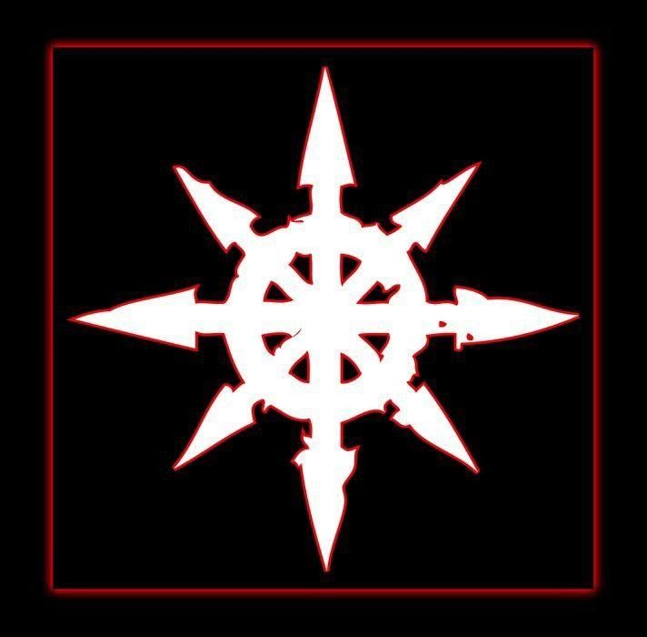

О Повстанцах
Повстанцы Хаоса — объединение, отделившееся от Организации. Оно возникло, когда в 1924 году одно из подразделений самовольно покинуло свой участок, взяв с собой несколько крайне полезных SCP-объектов. С тех пор Повстанцы превратились в крупного игрока на мировой сцене.
Состав высшего руководства
Комитет Дельта — теневой руководящий орган Повстанцев Хаоса. Принимает стратегические решения, но доводит их до ячеек через зашифрованные «шаговые инструкции»: исполнителям дают только следующий шаг, без контекста.
Отделы коалиции

WAR (Warfare & Anomaly Response) — боевое крыло. Ударные группы, диверсионные ячейки, штурмовые звенья. Их задача — быстрые удары, захват аномальных объектов, саботаж операций Фонда/ГОК. Работают по принципу «ударил — растворился»: после операции ячейки часто расформировываются и пересобираются заново.
.png)
LAB (Lab & Applied Breach) — исследовательское крыло. Изучают аномалии не ради сдерживания, а ради немедленного применения: создают «одноразовые» протоколы, ускоренные методы активации, полевые конвертеры аномальной энергии. Часто работают с нестабильными объектами, из‑за чего потери личного состава считаются «нормой».

LOG (Logistics & Operational Ghosting) — логистика и скрытность. Отвечают за перемещение ударных групп, маскировку, поддельные документы, «серые» маршруты поставок, утилизацию следов (вплоть до стирания цифровых следов и подмены записей камер).

INT (Intelligence & Narrative Warfare) — разведка и «нарративная война». Проводят операции по дезинформации, внедрению фейковых документов, взлому архивов, созданию ложных отчётов, чтобы запутать противника и заставить его тратить ресурсы впустую.
Дополнительно
«Двигатель» и «Машинист» — особая связка: «Двигатель» (аномальная сущность/система) генерирует импульсы/команды, «Машинист» (человек с телепатической/нейронной связью) транслирует их в виде инструкций для полевых ячеек. Никто, кроме Комитета Дельта, не знает природу «Двигателя».
Сеть «Эхо» — распределённая система передачи команд через аномальные каналы связи (в т. ч. нестабильные порталы, резонирующие артефакты, скрытые слои интернета). Не имеет единого центра: если один узел падает, инструкции идут через другой.